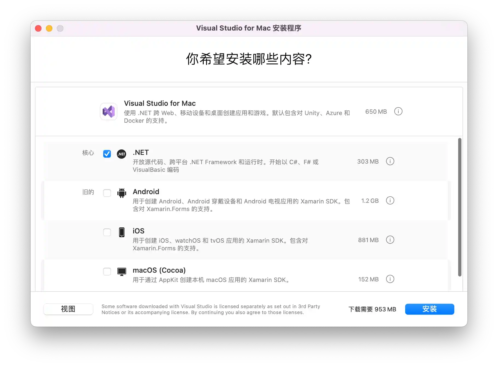

请访问原文链接：Visual Studio 2022 for Mac v17.0 发布，离线安装包下载 查看最新版。原创作品，转载请保留出处。
作者主页：sysin.org
2022 年 5 月 23 日，印度微软公布了 Visual Studio 2022 for Mac v17.0 正式版发布 (GA) 的消息，并且现在可以下载了。这是迄今为止最快的 Visual Studio for Mac 版本 (sysin)，具有全新的原生 macOS UI，完全在 .NET 6 上运行，并针对 Apple silicon (ARM64) 处理器进行了优化。
官方仅提供在线安装包，并表示 暂不存在离线安装方式，笔者摸索了一下，制作了完整的离线安装包，方便快速安装。
暂时不确定版本更新后，安装程序是否会联网检查新版本强制在线下载。
官网下载 Visual Studio 2022 for Mac v17.0 在线安装程序

同时发布了 Visual Studio for Mac 下一次更新的预览版，您可以与此 v17.0 GA 版本一起安装。此预览版带来了对 .NET 7 开发的初步支持，以及对 .NET MAUI 工具的初步了解 (sysin)。请在 v17.0 发行说明 和 预览版发行说明 中阅读有关这些版本的更多信息。
产品概览
为 Mac 打造的 .NET IDE
Visual Studio 2022 for Mac 完全融入了 macOS 体验，整个 IDE 均使用原生控件，具有全新的深色模式和原生 macOS 辅助功能工具。

快速且顺滑
Visual Studio 2022 for Mac 引入了基于 .NET 6 构建的全新完全本机 macOS UI，以及对 Apple M1 芯片的本机支持。所有这些改进可让你的日常编码工作更快更流畅。

使用 .NET 6 进行新式开发
Visual Studio 2022 for Mac 囊括 .NET 6 开发所需的几乎所有内容，从 Blazor 中的响应式 C# Web UI 到使用 Azure Functions 的事件驱动的解决方案。

发行说明
享受快速流畅的体验
此版本将 IDE 的前端 UI 替换为完全原生的 macOS UI，取代了我们之前结合了多种 UI 技术的架构。我们还通过在 .NET 6 上运行 IDE 来替换 IDE 的后端。这两个主要变化的结合导致了 Visual Studio for Mac 的最快和最灵敏的版本。
通过将 IDE 转移到 .NET 6 上运行，我们还解决了对 IDE 的最高请求之一 —— Visual Studio for Mac 现在可以在 Apple silicon(ARM64) 处理器上原生运行 (sysin)。现在，打开大型解决方案等操作的速度比 Visual Studio 2019 for Mac 快 50%。
使用 .NET 6 构建现代应用程序
构建应用程序 .NET 6。还支持 Azure Functions v4，因此您可以在 .NET 6 之上开发无服务器应用程序。
虽然 Visual Studio for Mac v17.0 不提供对 .NET MAUI 的支持，但与它一起发布的新预览版支持使用 .NET 6 和 .NET MAUI 对 iOS、Android 和 macOS 应用程序进行跨平台开发。
利用 Visual Studio 中的更多生产力工具
最后，此版本侧重于通过启用 Visual Studio（在 Windows 上）中的一些熟悉的功能来改善您的日常开发体验，例如 Git 更改窗口、工具窗口拖放和子词导航。

一个新的 Git 更改窗口，用于查看和提交您的工作。
下一步是什么？
今天，我们还将发布下一个版本的第一个预览版 - Visual Studio 2022 for Mac v17.3。您可以将此版本与 v17.0 版本并排安装 - 如果您已经在使用 v17.0 预览版 / RC 版本，您可以使用 Visual Studio > Check for Updates… 菜单同样地更新到下一个预览。
下载 Visual Studio for Mac v17.3 Preview 1
下一个版本的重点是继续我们在 v17.0 中开始的工作，通过初始 .NET 7 和 .NET MAUI 工具为 .NET 提供现代开发体验。我们还将针对一些较少使用但很重要的功能（如任务 / TODO 列表）解决热门反馈并完成向原生 UI 的迁移。了解有关此版本计划的更多信息请查看 路线图, 并通过查看 发行说明 来了解预览版更新的细节。
此外，对于那些跟随我们的人… 是的，我们通过几个 ++ 操作增加了次要版本号。这是为了匹配 Visual Studio（在 Windows 上）的版本号，并解决产品之间有不同的版本号集令人困惑的反馈。我们未来的目标是以类似的发布节奏跨操作系统发布 Visual Studio IDE。
对 .NET MAUI 工具的初始支持
我们很高兴地分享 .NET 多平台应用程序 UI (MAUI) 已发布 GA。Visual Studio 2022 for Mac v17.3 现在支持创建新项目、构建和部署 .NET MAUI 应用到 iOS、macOS 和 Android，以及 XAML 热重载。我们将在下一个版本中为 .NET MAUI 项目添加更多功能，包括共享项目属性页、应用程序发布支持和 .NET Hot Reload（用于 C# 编辑）。
提交您的功能请求和错误报告，帮助”>“报告问题” 因为我们正在努力发布即将发布的稳定 .NET MAUI 工具！
下载地址

Visual Studio 2022 for Mac v17.0 Full Installer (sysin)
百度网盘链接：https://pan.baidu.com/s/1OSxZadO2JH3J50OsJx2TuA?pwd=jgft
| 文件名 | 描述 |
|---|---|
| Visual_Studio_for_Mac_2022_Offline_Installer_full.dmg | 完整离线安装包 |
| Visual_Studio_for_Mac_2022_Offline_Installer_x64.dmg | Intel 处理器离线安装包 |
| Visual_Studio_for_Mac_2022_Offline_Installer_arm64.dmg | Apple 芯片离线安装包 |
| Visual_Studio_for_Mac_17.0.0.8989_x64.dmg | Intel 处理器独立主程序 |
| Visual_Studio_for_Mac_17.0.0.8989_arm64.dmg | Apple 芯片独立主程序 |
| Visual_Studio_for_Mac_Online_Installer-17.0.0.314.dmg | 在线安装程序 |
系统要求：OS X 10.11 or later，macOS Big Sur 11 or later for Apple silicon。

文章用于推荐和分享优秀的软件产品及其相关技术，所有软件默认提供官方原版（免费版或试用版），免费分享。对于部分产品笔者加入了自己的理解和分析，方便学习和研究使用。任何内容若侵犯了您的版权，请联系作者删除。如果您喜欢这篇文章或者觉得它对您有所帮助，或者发现有不当之处，欢迎您发表评论，也欢迎您分享这个网站，或者赞赏一下作者，谢谢！
 支付宝赞赏
支付宝赞赏  微信赞赏
微信赞赏赞赏一下
敬请注册！点击 “登录” - “用户注册”（已知不支持 21.cn/189.cn 邮箱）。 请勿使用联合登录（已关闭）。